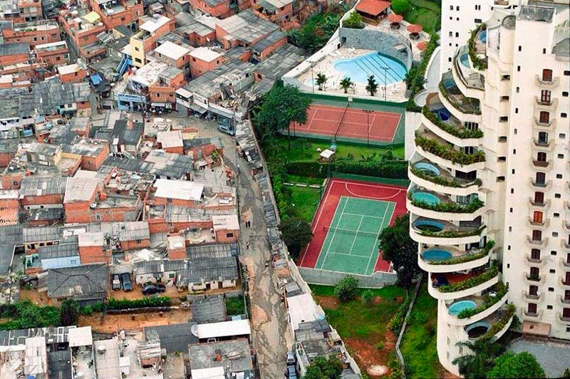
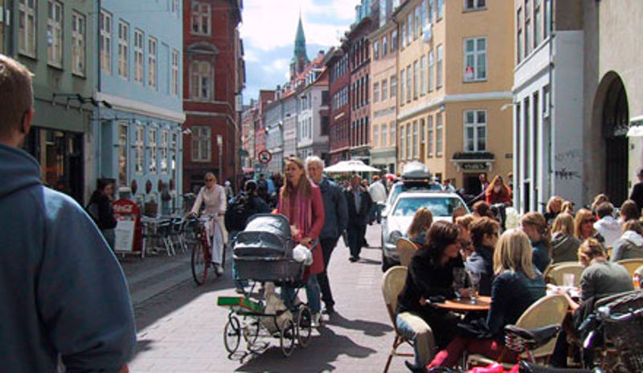
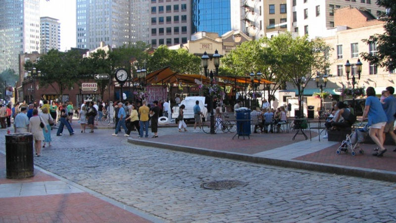

“Si buscas resultados distintos, no hagas siempre lo mismo”
Albert Einstein
Debido a la cantidad y complejidad de los problemas que se presentan en las ciudades actualmente, es necesario cambiar la manera de enfrentarlos. Es bien conocido que no se pueden obtener resultados diferentes haciendo las cosas de la misma manera, por lo que desde un aspecto teórico, habrá que replantearnos el enfoque que tenemos de la vida y del orden de prioridades, empezando por la visión actual de la economía; darle valor a la vida humana antes que a las cosas materiales y superfluas, considerando el bienestar humano como fin último. Desde el aspecto práctico, habrá que realizar acciones concretas priorizando lo que nos lleve a esta visión, empezando con el espacio público, el cual se considera el principal escenario que por si sólo estimula la convivencia.
Manfred Max-Neef (2009), economista y ambientalista chileno, ganador del Premio Nobel Alternativo de Economía, quien en su conferencia magistral “El mundo en rumbo de colisión”, establece un contexto de la economía actual y la crisis en la que nos encontramos y presenta un modelo de economía humano y no consumista mediante propuestas para poner en práctica el desarrollo a nuestra escala. Volver a voltear hacia adentro.(1)
Durante esta conferencia, el economista hace referencia al hambre en el mundo, indica que con el dinero que se usó para salvar a los bancos de la situación financiera en 2009, se podrían salvar miles de vidas de las personas que mueren de hambre durante 600 años. La realidad es que desde la postura de la economía neoliberal, es más importante y urgente salvar los bancos. (Max-Neef, 2009) ¿Es esto para la humanidad prioritario?

“Yet the gross national product does not allow for the health of our children, the quality of their education or the joy of their play. It does not include the beauty of our poetry or the strength of our marriages, the intelligence of our public debate or the integrity of our public officials. It measures neither our wit nor our courage, neither our wisdom nor our learning, neither our compassion nor our devotion to our country. It measures everything in short, except that which makes life worthwhile.”
Robert F. Kennedy.
Menciona que la problemática de la sociedad actual se desprende principalmente de la búsqueda inalcanzable de la “felicidad” que nos hemos impuesto como meta, al creer que tener más es mejor.
Explica que el paradigma económico dominante, parte de la ideología neoliberal que pone como prioridad el crecimiento económico a cualquier costo, lo cual promueve los anti-valores de acumulación, competencia y codicia.
El economista subraya que debemos cambiar de enfoque ya que nos encontramos tratando de resolver problemas actuales con teorías del siglo XIX. Por lo cual señala que un Nuevo Paradigma requiere alejarnos de los valores anteriormente mencionados como metas centrales del presunto bienestar social y remplazarlos por los de solidaridad, cooperación y compasión con la visión del desarrollo humano suponiendo que la calidad de vida, bienestar, salud, amor, abundancia sean los objetivos de una construcción del ser humano en comunidad por medio de la convivencia.
Max-Neef desmitifica una serie de principios que nos han impuesto y presenta como alternativa posible un modelo económico sustentado en cinco principios básicos:
- La economía debe servir a las personas y no las personas a la economía; el desarrollo debe dirigirse a las personas y no a los objetos.
- El crecimiento no es lo mismo que el desarrollo y el desarrollo no necesariamente precisa de crecimiento.
- Ninguna economía es posible al margen de los servicios que prestan los ecosistemas.
- La economía es un sub-sistema de un sistema mayor (la Tierra) que es finito, por lo tanto el crecimiento permanente es imposible.
- Ningún interés económico, puede estar por sobre la reverencia por la vida.(2)
Desde esta perspectiva se han ido realizado esfuerzos en todos los niveles, tanto organizaciones internacionales como locales. Los países desarrollados han dirigido muchas de sus políticas hacia el bienestar, calidad de vida y salud. Así poco a poco el paradigma ha cambiado y se han ido adoptando acciones concretas que de manera muy puntual, cambian el enfoque y actúan sobre la línea de la convivencia, teniendo gran éxito para la contribución de problemas actuales.
La convivencia en su acepción más amplia, se trata de un concepto vinculado a la coexistencia pacífica y armoniosa de grupos humanos en un mismo espacio(3), con otras palabras, el compartir, vivir en compañía de otros, ser conscientes de que formamos parte de un sistema social y que tenemos que contribuir al desarrollo de cada sistema al que pertenecemos, en donde el desarrollo personal o individual incida y/o aporte al del sistema.
Mucho se habla de que queremos ciudades hechas para la gente, por lo tanto debe ser de primordial interés el bienestar, salud y la felicidad de su población. La planeación e intervenciones de ciudad deberían estar orientadas hacia la creación de espacios que faciliten y promuevan la vida en comunidad. Además la priorización en la toma de decisiones deberá ser a partir de lo que contribuya más a la construcción del ser humano en convivencia, es decir, a desarrollar las capacidades, habilidades, talentos y valores del la sociedad de manera individual y en conjunto.
Como el escenario ideal para fomentar la convivencia en las ciudades, es el espacio público, es donde se tejen las relaciones sociales, por lo tanto la conformación de estos espacios en la ciudad deberían contribuir a desarrollar las capacidades humanas. Por lo tanto, si los valores centrales giran en torno a la colaboración, solidaridad y compasión lo mejor sería determinar como criterio fundamental para la creación de ciudades, el desarrollo del ser humano en sociedad.

El espacio público adecuado facilita el desarrollo del arte, cultura, deporte, tecnología, ciencia y la comunicación; se centra en el ser humano y no de manera individual, sino en compañía de otros. Reinventar el espacio público con el objetivo de facilitar la convivencia es el reto que muchos se están fijando, mediante la creación de una estructura con nodos que faciliten la actividad colectiva vinculados por medio de andadores atractivos que estimulen la comunicación y la movilidad, y que promuevan que la gente se junte, se conozca, se encuentre, comparta, viva experiencias en sociedad. Mediante infraestructura adecuada para una movilidad mas eficiente y sustentable, con mas paseos peatonales que en automóviles, que ayuden a ejercitar, conocer la ciudad, socializar y disfrutar el paseo, vivir la ciudad.

A continuación se presentan algunas recomendaciones para crear ciudades más humanas que contribuyan por el hecho de vivir en ellas a la construcción del ser humano en convivencia:
- Acondicionar y ampliar las banquetas para darle más espacio al peatón no sólo para desplazarse de un lado a otro, sino para quedarse en el lugar a disfrutar de la vista y/o descansar.
- Incorporar la escala peatonal (walk scale) mediante mobiliario urbano en banquetas o plazas y parques, con el fin de brindar confort al peatón.
- Crear nodos de espacios públicos interconectados físicamente entre sí a través de redes peatonales, áreas verdes y ciclovías acondicionadas.
- Acondicionamiento climático y acústico del espacio urbano, produciendo barreras acústicas (con materiales naturales y artificiales) que protejan al peatón del ruido del tráfico y le ofrezcan protección de las condiciones climáticas adversas (frío, calor, lluvia, etc).
- Integración de la pedagogía al diseño y a la gestión del espacio urbano. Fomentando la cultura, educación y concientización sobre el uso correcto del espacio urbano: vialidades, vegetación, residuos, etc.
- Incentivar la movilidad sustentable, estimulando el uso de transportes masivos y ofreciendo la infraestructura adecuada para el uso masivo de la bicicleta y recorridos a pie.
- Iluminar el espacio público, para brindar la percepción de mayor seguridad y de calidez.
- Equidad e inclusión social, el diseño del espacio público debe ser capaz de conciliar los diferentes ritmos de los usuarios, desplazamientos a diversas velocidades y con los requerimientos para los diferentes tipos de usuarios, tanto de los menos favorecidos o más vulnerables como son personas con alguna discapacidad, personas que necesitan detenerse a descansar, como de quien recorre el espacio observando vitrinas, ciclistas, o transporte motorizado.
- Diseñar con materiales duraderos y de bajo costo, para que resistan en el tiempo el uso frecuente de las personas y que requiera poca inversión sin que ello vaya en detrimento de la calidad de los mismos o de su diseño.
- Incrementar la biodiversidad (flora y fauna) utilizando especies de la región para que esto atraiga fauna que permitirá una mejora de la calidad ambiental de la ciudad. Además el uso de vegetación visual y olfativamente diferente ofrece un espacio cambiante sensorialmente.(4)
Estas estrategias son una forma de humanizar el espacio público, sin embargo deberán estar acompañadas de muchas acciones que sumadas hacen la diferencia entre la ciudad amable, inclusiva y democrática y la ciudad agresiva, excluyente e indiferente.
Referencias
- Manfred Max-Neef (2009), “El Mundo en Rumbo de Colisión”. Conferencia Magistral en Universidad Internacional de Andalucía.
- http://viva.org.co/escuelas/?p=64
- http://definicion.de/convivencia/#ixzz3egfJ2XLm
- http://istmo.mx/2012/04/la-reconquista-de-la-calle-hacia-ciudades-mas-humanas/